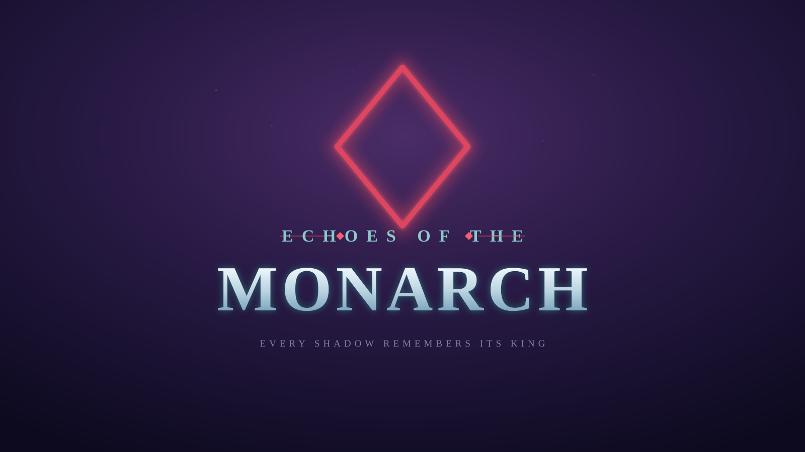
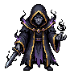
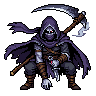
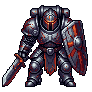
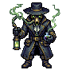
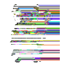
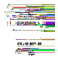
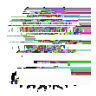
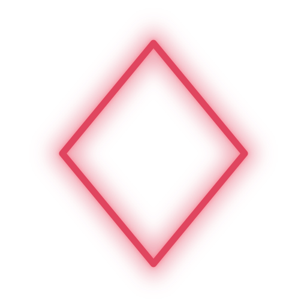

Every shadow remembers its king
Five hunters raid the gates between worlds, harvest the dead into a shadow army, and grow their guild hall from the spoils.
The Promise
Not grimdark — beautiful, wistful, a little mournful. Polished pixel art over a fallen, twilight world. Four pillars hold the whole thing up.
Responsive real-time co-op combat is the foundation everything else hangs on.
Every drop is a decision: equip it, sell it, feed it to your shadows, or break it for mats.
Refining gear, raising shadows, descending deeper gates — the thrill lives in the gamble.
The guild hall grows with you and gives every raid a point.
Choose your hunter
A full party, the whole palette pushed dark. One commands an army; the rest hold the line.

"Arise" extraction. Commands a standing shadow army — the only class that fields a full host.

Scythe burst, mobility, life-steal. Raises a single flash shadow on execute.

Holds the front and sustains through lifedrain. A tank–DPS hybrid.
Curses, damage-over-time, and crowd control that breaks the enemy's tempo.

A dark healer — mends by siphoning, buffs through sacrifice. Grave-themed, never holy.
…and the one from the wood
Not one of the Five — an outsider who shares the dark, but not the death-creed.

A dark druid — the wild green-dark that grows over the death-court's graves. He claims the dungeon floor with creeping rot-overgrowth, composts the dead into power, and shifts between two seasons of himself:


The core loop
A dungeon-crawler's pulse: shared real-time combat, then a quiet hall to spend the spoils.
Real-time co-op combat. Claim shadows and instanced personal loot.
Sell loot, manage shadows, craft and refine your gear.
Upgrade hall facilities — blacksmith, summoning altar, market.
Higher rank, better loot, harder bosses. Then begin again.
The world
Rifts open onto Yggdrasil's realms — each a distinct mythic world, each its own legend. Gates are graded by rank; the deeper you go, the less the dark gives back freely.
For the party's eyes
Where the build actually stands — what you can play today, what's next on the bench, and what's fully designed and waiting its turn.
From the workshop
The full build history, newest first — every milestone, exactly as it was written down.
[client] Gate rank is now player-facing — the title screen gets an E→S picker. The room-state gateRank (server-owned since 2026-07-10, but nothing ever sent one at creation) is now proposed by the player: a new gate row on the title screen (TitleScreen.tsx) lets you pick E→S, persisted to localStorage (etom.gateRank), and joinGame() passes it as { gateRank } to client.joinOrCreate("game", …). The header shows the room's authoritative GameState.gateRank synced back from the server (App.tsx, via getStateCallbacks(room).listen) — never the player's raw pick, per invariant #1. Honest caveat: this slice still shares one room via joinOrCreate, so the proposed rank only takes effect for whoever creates the room; a second player joining an existing room inherits its real rank regardless of what they picked, and sees that truth in the header. Proper per-run gate selection is the Phase 2 Gate Board (WORLDMAP.md §10.5) — this is a slice-scoped stopgap, not that system. Client-only — the server/shared validation (isGateRank), defaulting, and enemy/loot scaling already existed and are unchanged; not breaking, nothing to re-pull.
[client] [art] The Reaper and Grave Thrall walk now — not just idle. Both directional sprites go from a single idle loop (Reaper) / static frame (Grave Thrall) to full idle + walk cycles per facing, regenerated via the PixelLab pipeline and served through art/sprites/serve-animations.mjs. MainScene.ts now tracks per-entity frame size per direction (diagonal facings render wider than cardinals — isometric perspective, no longer a single REAPER_FRAME_PX constant) and switches each sprite between its idle-<dir> and walk-<dir> animation based on frame-to-frame motion, excluding the hit-lunge offset so a recoil never fakes a walk cycle. The old static Reaper idle strips are archived under art/sprites/_archive/reaper-legacy-idle/. Cosmetic only — positions stay server-authoritative + interpolated (invariants #1/#3).
[shell] Phone shell — brand/UI kit refresh + its own Cloudflare Tunnel. The mobile command console adopts a shared, role-based token contract (new kit/tokens.css, mirrored from Kage-Gumi's mobile shell) with a dedicated brand-eotm.css binding those roles to EOTM's void/teal/crimson/gold palette — the one file allowed to diverge between the two shells. Font stack moves DM Sans → Inter (body/data) + IBM Plex Mono (code), Cinzel stays on the wordmark. Adds a sprite browser (/api/sprites, token-gated, PNG-only, reusing an extracted tokenGate()), a splash/hold screen, a portrait-guard overlay, a full-screen message composer with a mic/dictation button, session filter/search/swipe actions, pull-to-refresh, haptics, and back-gesture handling; fixes a 59px gap under the docked tab bar on installed PWAs (iOS status-bar style black-translucent → black). ecosystem.config.cjs adds a second PM2 app, eotm-tunnel (cloudflared), giving EOTM its own tunnel independent of Kage-Gumi's — README.md rewritten to match (and corrects an earlier wrong claim about reusing KG's tunnel). Dev tooling only — touches no server//client//shared//content/ game code.
[shell] Fix: SYSTEM ▸ STATUS chopped the first character off the first changed file. The panel listed hell/command-server.mjs where git had shell/command-server.mjs. Surfaced while diagnosing a *different* fault — STATUS and SERVICES were returning 404 on the box because PM2's eotm-shell was still serving pre-SYSTEM-tab code (a git pull updates the file on disk, but Node never reloads a running module); once a restart made the panel render at all, the truncation was visible. Cause: sysGit() ran .trim() over git's stdout, but git status --porcelain encodes staged/unstaged state in two leading columns, so an unstaged-only modification emits a literal leading space (" M path"). The trim ate that space on the first line only, shifting it one character left, and the l.slice(3) path parse — which assumes the fixed XY<space>path layout — then cut one character too deep. Lines 2+ kept their space and rendered correctly, which is exactly why only the top entry looked wrong. out is now trimmed trailing-only (.replace(/\s+$/, '')), verified a no-op for all 15 other sysGit callers (rev-parse, rev-list, log, and the fix-action outputs never carry meaningful leading whitespace). The parse is also hardened into a parsePorcelainLine() helper: it keys "this line is intact" off the separator column, falls back to a 1-char status if a line ever arrives shifted (defence in depth), and resolves rename/copy entries (old -> new) to the destination path; git status now runs under -c core.quotePath=false so non-ASCII paths come back literal instead of C-quoted. Display-only — no fix action ever consumed these paths, so nothing unsafe was reachable. Dev tooling only — touches no server//client//shared//content/ game code.
[shell] Phone shell v2 — a SYSTEM tab, live STOP, and session housekeeping. The mobile command console grows a second surface. SYSTEM is three segments over the box: STATUS (git divergence against origin — ahead/behind, dirty files — with tiered fix actions: *safe* fetch / pull --ff-only / push, a *clean*-tree-only rebase that auto-aborts on conflict, and *destructive* reset-hard / commit-all-and-push behind a typed-confirm gate), SERVICES (pm2 process control for eotm-shell, self-restart handled by answering the request *before* the socket drops), and PLANS (the planning docs, moved in from the old top-level tab). COMMAND gains a STOP button on a running turn — a Windows tree-kill (taskkill /T) of the cmd.exe → claude process, persisted as an *interrupted* (not failed) row the poller settles cleanly — plus a quick-replies kebab flyout and soft session close/reopen (a closed session hides from history unless asked for, and its stranded pending turn is reaped so it can't pin the reply-state forever). New server endpoints: /api/shadow/turn/:id/interrupt, /api/shadow/session/:id/{close,reopen}, /api/system/git[/:action], /api/system/services[/restart] — every action a server-side whitelist (the path segment only ever indexes a fixed action map; no request string reaches the shell). Dev tooling only — touches no server//client//shared//content/ game code.
[shell] Fix: the console no longer snaps to the top when you navigate or reply. Every 4s poll / label tick / tab switch / transcript toggle rebuilds the whole view via innerHTML, which destroyed the scroll container and threw the reader back to the top; and a sent message spent its scroll-to-bottom intent on the hidden composer-hero frame, so it landed at the top instead of on its fresh pending bubble. render() now captures the live scroll offset of the COMMAND thread and the SYSTEM body *before* the rebuild and restores it *after*; scrollWanted pins the thread to the bottom only for genuinely new content (your message, a reply, a live-progress update) and is consumed only on a frame where the thread is actually visible. You stay where you were reading.
[shell] The console is now an installable PWA. Added manifest.webmanifest (standalone, portrait, void-black theme) + PNG icons (192 / 512 / maskable + apple-touch), so *Add to Home Screen* yields a full-screen Monarch app instead of a browser tab.
[shell] Monarch phone shell — run the build + deploy pipeline from your phone. A new shell/ tool (zero npm deps) lets Steven trigger EOTM builds from mobile, the way Kage-Gumi does. command-server.mjs is a token-gated HTTP server that streams live command output over SSE; the mobile page (shell/public/index.html, one self-contained file in the game's indigo/silver/crimson palette) shows grouped touch buttons — *Status · Pull · Install · Typecheck · Build all · Build gated site · Ship site · Full build + deploy*. The two deploy buttons need a confirm tap and end in git commit + push, which fires the existing deploy-presentation Action → echoes-of-the-monarch.com. Every command is a fixed server-side bash allowlist — the phone only ever sends a command *id*, never command text, so there's no injection surface; plus a one-command-at-a-time lock, a stop endpoint (SIGTERM→SIGKILL), and an SSE heartbeat for proxied connections. Runs on the box (not a laptop) under PM2 (shell/ecosystem.config.cjs, binds 127.0.0.1:5373 behind the box's TLS reverse proxy); the access token auto-generates into shell/data/ (gitignored, never committed). Dev tooling only — touches no server//client//shared//content/ game code.
[server] [shared] Selling — the economy loop closes. A player can now turn a bag item into personal gold. New Sell message + SellMessage { seq, itemInstanceId } in shared/src/messages.ts; GameRoom.resolveSell finds the item in the sender's bag only (equipped gear must be unequipped first — we never search equipped), removes it, and credits Player.gold by the item's own sellValue — read off the server-held instance, never a client-supplied price (invariants #1/#5). Silent on rejection; no stats recompute (a bag sell can't change the loadout). This makes two of the four §7b drop-fates real (*equip · sell*) and gives gold its first genuine source. ⚠ shared (additive) — new message type + interface; existing clients keep working, but re-pull shared/ to send/handle it. *Backend only — no client Sell button yet, so it's dormant in live play until the client wires it.*
[server] [content] [shared] **Gate rank is now room state — deeper gates, better loot *and* tougher enemies (§10).** The hardcoded CURRENT_GATE_RANK = "E" constant is gone. A room takes its rank from creation options, validated server-side by a new isGateRank guard (+ GATE_RANKS) in shared/src/items.ts — untrusted input, defaults to E (invariant #1) — and holds it in the new synced GameState.gateRank. dropLoot now rolls at this.state.gateRank, so the loot roller's existing E→S rarity/value curve finally *varies per gate* (it was always capable; nothing chose the rank). Enemies scale too: content/src/index.ts gains ENEMY_RANK_SCALAR (E 1.0 → S 3.0) + a pure scaledEnemy() that multiplies HP and damage only (speed/ranges/cadence stay fixed, mirroring the roller's discrete-stat philosophy, invariant #6). The Grave Thrall is 60 HP / 6 dmg at E, 180 HP / 18 dmg at S. New enemyScaling.test.ts (10 tests) covers the scaler + the guard. ⚠ shared (additive) — new gateRank state field, GATE_RANKS, isGateRank; re-pull shared/. *Backend only — nothing sends gateRank at room creation yet, so live play still defaults to an E-gate until the client passes it.*
[docs] New operating rule — ask which model before executing (when Steven's at the keyboard). CLAUDE.md gains a *Model Selection* hard rule: before any substantive execution (writing/editing code, running builds, deploys, git commit/push, multi-step work) I stop and ask Steven which model — Opus / Sonnet / Haiku — then delegate that work to an Agent subagent pinned to his pick (the main session can't switch its own model; a subagent can). Read-only lookups, answering, and planning never trigger the ask. Autonomous runs decide for themselves — /loop, cron, background, and remote triggers proceed on a sensible default and never block on a prompt (no one's there to answer). Mirrors the same rule already in the Kage-Gumi repo. Docs/governance only — no game code.
[client] The full loot filter — Phase 2's first client system. Phase 1's single [F] rarity threshold is replaced by a configurable, ordered rule engine (client/src/lootFilter.ts): each rule is a conjunction of optional criteria — rarity floor/ceiling, item type, min sell value, name substring — and an action (*hide / show / highlight*); rules apply top-to-bottom, first match wins, with a fallback for unmatched drops. The action drives both display and pickup: hidden drops dim and are never auto-looted, shown drops auto-loot, highlighted drops gain a pulsing rarity-colored beacon. Edited live in a new React panel (LootFilterPanel.tsx, open with [L]) and persisted to localStorage; the default ruleset demonstrates all four §8 goals (color-by-rarity, hide common junk, highlight cards/uniques, auto-pickup-only-what-passes). Pushed into the running Phaser scene without a reconnect. Entirely client-side — nothing touches server/, shared/, or content/.
[client] Manual-pickup mode — a new title-menu setting. Options now offers Auto-loot (instant) (the §8 default) vs Manual pickup ([G]): in manual mode, filter-passing drops sit on the ground — dimmed if hidden, beaconed if highlighted — until you press [G] to collect everything in reach, so highlighted loot is actually *visible* before it's grabbed. The filter still governs eligibility in both modes; [G] only ever collects what would auto-loot. Persisted like the control scheme; read once at connect. View-layer only — the server still authorizes every pickup (invariant #1).
[client] Note for Levi (server/): item-*type* filtering ("highlight cards") currently derives an item's type client-side from @etom/content by itemId (client/src/game/itemTypes.ts) — a display stopgap that works for the static loot tables but won't resolve future server-rolled instance ids. The durable fix is one field: @type("string") itemType on LootDrop (server/src/schema/GameState.ts), set from item.type in dropLoot(). Small, non-breaking; flagged in the file header.
[client] Interpolation delay widened 100 → 150 ms — closing the throttled-network gate. Running the slice under the existing netsim shim (client/src/net/netsim.ts, ?lag=&jitter=) surfaced the one tuning the localhost verifies could never reveal: at TICK_RATE = 20 the server emits a snapshot every 50 ms, and with jitter the gap between consecutive *arrivals* can swing to ~130 ms — past the old 100 ms interp window, so the buffer periodically ran dry and remote players/enemies/shadows hitched. INTERP_DELAY_MS is now 150 ms (3 ticks), covering one interval plus the ~2× jitter swing. Local player is untouched (predicted, not interpolated), and reconcile() was deliberately left as a hard snap: server and client run the *same* applyInput over the *same* 1:1 input queue, so ack-timing jitter changes *when* reconciliation fires, never its *result* — there's no drift to soften (invariants #1/#3 hold).
[verify] Phase 1 exit gate — objectively closed. Drove two headless clients (Playwright) through the committed shim and the title-screen connect flow at the friends profile (?lag=60&jitter=20 ≈ 120 ms RTT) and a harsher ?lag=120 (~240 ms RTT). Results, reproducible across runs: both clients join through the shim (reaching "connected" *is* the proof — the Colyseus handshake round-trips messages both ways over the delayed socket), then sustain ~7 s of concurrent click-to-move — both still connected, zero page errors — with the loop holding at ~240 ms too; ?lag= absent installs nothing (true no-op, no banner, no errors). So the falsifiable failure modes the gate exists to catch — desync, disconnect, rubber-band, crash under latency — do not occur, and rubber-band is correct-by-construction (shared applyInput + 1:1 queue). Honest boundary: the shim's absolute *delay magnitude* isn't independently re-measured headlessly — its order-preserving transparency confounds every external probe (three were tried and abandoned), and it's already established by the committed shim + its install banner. The last 5% — the subjective *"does it feel good"* — is a 30-second human two-tab eyeball: npm run dev, open two tabs at http://localhost:5173/?lag=60&jitter=20, judge snappiness + remote smoothness. Objective integrity is proven; the aesthetic sign-off is Steven's.
[site] Calmed the portrait hover-spin. Tuned the turntable to a slower, more deliberate pace (~420ms/frame, ~3.4s per full turn, up from a brisk 130ms) so it reads as a stately turn rather than a whir. One-line tuning of the feature below.
[site] Portraits spin on hover. Every class portrait (and the Blightwarden's two forms) now turns like a turntable when you hover it, cycling the 8 directional frames we already have, then snapping back to the front frame on leave. New site/sync-sprites.mjs copies the rotation frames from art/sprites/classes/<id>/rotations/ into presentation/assets/sprites/rot/<sprite>/<dir>.png (64 frames, 8 sprites); the page preloads them per-portrait so the spin is flicker-free. Pure view-layer JS + assets; touch devices get a single tap-spin. Also restored the Blightwarden's base druid portrait above the Wild ⇄ Grove forms (it was dropped when the two-form showcase landed). Site only.
[site] The Blightwarden shows both his forms on the site. His card in the Dark Five section no longer shows one generic portrait — it now presents the Wild ⇄ Grove duality that *is* the class: Wild (the hunt — antlered beast that rends and bleeds) and Grove (the deep root — half-tree caster that walls and entangles), side by side with a swap glyph between, in the outsider's forest-green theming. Uses the existing form sprites (art/sprites/classes/blightwarden/forms/{wild,grove}), copied into presentation/assets/sprites/blightwarden-{wild,grove}.png. Site only — no game code.
[site] **The presentation is now password-gated — and it's *real* encryption, not a JS show/hide. The whole site sits behind one access word. The published presentation/index.html is a generated artifact that holds nothing but AES-GCM ciphertext + an in-browser decryptor: a PBKDF2 key is derived from the password and the entire document is decrypted client-side, so without the word the content isn't in the page source at all (offline brute-force is the only attack — fine for a friends build). New build pipeline: the editable plaintext lives in site/source.html (private — outside the deploy's publish_dir, never pushed public), and site/build.mjs renders the on-page Ledger from planning/RELEASE_NOTES.md, encrypts the composed document, and writes the gate page. The build self-tests every run** (round-trip, wrong-password reject, abort-on-plaintext-leak); verified end-to-end in headless Chromium. presentation/README.md + /ship (this command) updated for the new *edit-notes → node site/build.mjs → commit* flow. Whole site is gated now (the old public marketing hero included); the gate sets noindex. *(Site/tooling only — no game code, nothing touches shared//content/.)*
[site] State-of-the-Game overview added. A new insider section on the (now gated) site: ✅ Playable now (the combat slice), 🔜 Up next (the throttled-network feel pass), 📐 Designed-not-built (the armory, the Dark Five + Blightwarden, skill trees, gates/floors, the guild hall) — so a friend opening the site sees where the build actually stands, not just the pitch. Authored in site/source.html.
[site] Fix: the Ledger rendered completely empty. The release-notes Ledger was wrapped in a .reveal fade-in whose IntersectionObserver only fires at 15% visibility — but the ledger is thousands of px tall, so 15% can never fit the viewport, .in was never added, and it stayed opacity:0. Moved the reveal off the tall container onto each (short) per-day section, so the fade still plays and every entry is shown. Verified on real on-scroll behavior (not force-enabled) in headless Chromium.
[design] The world map — the Gate Board designed. New planning/WORLDMAP.md + a PROJECT_PLAN.md §10.5 cross-link, filling the loop's unspecified arrow (*return to hall → which gate do we open?*). It's the layer above LEVELS.md: that doc is *what a gate is*, this is *how gates are offered and chosen*. Settled as a between-runs gate-selection screen (not an explorable overworld — free-roam + mounts stay parked), framed as the Yggdrasil world-tree, showing a server-rolled, refreshing roster of gate offers (the SL "gates have appeared/closed" beat) — a shared party board, not personal inboxes. Key model: a GateOffer is a pre-rolled LEVELS.md Gate *minus its floors* ({rank, realm, modifiers, seed}) — floors aren't assembled until launch, so the board is cheap and the dungeon is built on entry. Progression is two-axis: hunter clearance raises the rank ceiling (the §2 "deeper gates unlock" arrow made concrete) and realm unlocks widen the pools (start in Helheim). Refresh = periodic partial reroll + on-clear reroll + expiry + a gold-sink manual reroll, now DECIDED as a communal sink paid from shared guild-hall gold (plan §9), not personal stash. Gate nodes surface the existing LEVELS.md affixes + plan §7a loot knobs as banes/boons (the informed-choice layer — authors no new scaling), and two chase nodes spike the board: Red Gates (above-ceiling, modifier-heavy, guaranteed trophy shadow) and Echo Gates (the title's namesake — rare spirit-themed endgame). Engineering-wise it's closer to the loot filter than the dungeon (server-provided metadata, client-rendered, one *select* input — no new netcode, nothing touches shared/); the only new server logic is the roster roller (invariant #2) + the offer→Gate launch handoff. Phase 2 (needs ranks + the hall). Design only — nothing shipped, no schema contract yet.
[design] Skill trees & job advancement — the progression spine designed. New planning/SKILLTREES.md unifies each class's §5 kit and §6 advancement sketch into one system, one schema, one set of rules, and PROJECT_PLAN.md §5/§11 now point to it. The model: one tree per class read in three depth bands that map 1:1 onto the RO base→2nd-job→transcendent tiers — *Foundation* (shared spine / the rest of the kit), *Specialization* (the §6 fork into two wings, with a point budget too small to max both, so you lean), *Transcendence* (a capstone that holds the class's ultimate open as a state). Only four node types (unlock / rank / passive / keystone), each backed by *existing* data — an AttackDef/SummonDef id, a number delta, an affix stat mod reusing the armory's stat vocabulary, or a sim flag — so a node never ships new sim code (invariant #6). All six class trees are worked out (§3): the Reaper at full fidelity as the proof, plus the Knight, Monarch, Hexer, Plague Doctor, and Blightwarden. Notable design beats: the resource gauge is a keystone that physically gates cooldown-first (an un-specced character is cooldown-only — the §11 "don't over-build early" rule encoded as tree topology), with the Monarch (innate MP) and Hexer (stacks-on-enemy) as deliberate exceptions; allocation is server-authoritative and RNG-free (unlike loot/refine); and two invariant-#4 flags carried through (the Monarch's army-cap nodes can't buy past ROOM_SUMMON_CAP; the Knight's Taunt nodes are inert until the parked threat/aggro model lands, ENEMYTACTICS.md §10). Design only — no code; Phase 3, nothing shipped. The one parked blocker: the SP-per-level point budget waits on the (undesigned) leveling curve. *(The shared/+content/ schema is a sketch in §4, not yet a contract — no re-pull needed.)*
[client] The Reaper idle-animates. His static directional frames are replaced by 8-frame looping idle strips per facing (96px frames, 5 fps), so he now breathes/shifts his scythe in place and swaps the matching idle loop as he turns — MainScene loads them as Phaser spritesheets and registers one looping anim per direction (grave-thrall stays a static frame). Assets live in client/public/sprites/reaper/idle-<dir>.png (+ idle.json manifest), archived under art/sprites/classes/reaper/animations/idle/.
[tooling] Animated-sprite pipeline (art/sprites/process-gifs.mjs). Turns PixelLab's per-direction animation GIFs dropped in _inbox/ into game-ready horizontal PNG strips + a manifest. Decodes GIF frames via Chromium's WebCodecs ImageDecoder (driven by playwright-core against the cached browser); reusable for every future class/enemy animation drop. Pure art tooling — no game-code dependency.
[design] The armory drop spec, made concrete & internally consistent (PROJECT_PLAN.md §7a). The framework was locked; this fills the four data inputs the server roller actually needs and resolves the loose threads. Adds: (1) a base catalog — 11 starter Helheim bases, one per slot, with deterministic implicits and the hands/offhandLegal two-hander flag; (2) an affix dictionary as 7 stat families (one affix per family per item — promotes the old "no shared stat" rule so atkFlat+atkPct can't stack), with slot-legality and rank-E value ranges; (3) rarity-weight tables for all six ranks E→S (filled the missing D/B rows); (4) a value scalar E ×1.0 → S ×3.0 that now multiplies base implicits too (so a high-rank base isn't swamped by its own affixes and base choice keeps mattering), with discrete stats excluded (attackSpeed/moveSpeed/summonCount/sockets — a ×3 on a count would break cooldown floors and the room entity cap, invariant #4); (5) a per-rank socket roll (p 0.10→0.70, cap from rarity — deeper gates hit the cap more often, the card-chase reason to re-run a gate) and bumps epic to 1–2 sockets so cards are a real chase; (6) a 6-theme resist taxonomy (physical/frost/ember/blight/decay/spirit) keyed to realm enemy families instead of nine diluted geographic resists; (7) drop-quantity rules on the principle grade=quantity, gate rank=quality (trash ~35% drop-gate, elites +chance for a second, bosses 2–3 + a boss-card pull) so deeper gates drop *better*, not a flood. Also adds evasion to the §7a slot→pool wiring's stat list. Design only — no code. When the roller is built, content/ gains these tables and shared/src/items.ts needs the hands/offhandLegal base fields + evasion in GearStat (flagged ⚠ upcoming shared).
[design] evasion added to the gear stat vocabulary. PROJECT_PLAN.md §7a already routed "garment rolls evasion/resist" in the slot→pool matrix, but evasion was missing from the stat-vocabulary list itself — added it (dodge chance, the garment axis) so the two halves agree. Design only. Note for the build: the GearStat union in shared/src/items.ts doesn't list evasion yet, so it'll need adding there when the loot roller is implemented.
[design] Enemy tactics — co-op pressure + the harvest economy. planning/ENEMYTACTICS.md gains §7.5 (Tactics for co-op) and §7.6 (Harvest-tension), threaded into the §8 schema and §10 parked list. §7.5 locks the rule that *every standard pack must pose a "who-does-what?" question* (no walk-at-you blobs), maps five coordination problems (punish-clumping, force-a-kill-order, punish-over-spread, split-the-party, frontline/backline) onto the §3.5 technique vocabulary by phase, and adds a targeting selector to EnemyDef — nearest | lowest-hp | farthest in Phase 2 (cheap, no threat table), with highest-threat deferred until the Crimson Knight tank + a threat table exist. §7.6 makes the corpse a *contested resource* (it feeds Arise, PROJECT_PLAN §6) across four levers: the clock (corpse lifetime — RESOLVED: short + grade-scaled, ~3s/5s/8s = 60/100/160 ticks at 20 Hz by gate rank), the trap (a {on:death} burst sitting over a harvestable corpse — pure §3.5 composition, zero new code, P2), the thief (the *rival-harvester* enemy pillar — Sin-Eaters consume / necromancers raise your corpses, via a new corpseAction: feed | raise technique field, P3), and the interrupt (punished mid-raise — deferred to the Shadow Monarch's Arise write-up). §10 now marks aggro/threat partially resolved and corpse-lifetime resolved; BESTIARY.md tags the corpse-denial creatures. Design only — no code; flags the ⚠ upcoming shared additions (targeting, corpseAction, corpseLifetimeTicks) to coordinate before they land.
[shared] ⚠ breaking/shared — The item schema grows for dropped gear. shared/src/items.ts gains the loot vocabulary the armory needs: EquipSlot (the 10-slot RO loadout), GearStat (the closed set of stats gear may touch — maxHp/maxMp/atkFlat/defPct/attackSpeed/critPct/resist:<realm>/summon* …, so gear is never decorative), GateRank (E→S), and two new shapes — AffixDef (the affix registry entry: label, sim stat, [min,max] roll range, slot-legality, pick weight) and BaseItemDef (the deterministic template a drop instantiates). Item now carries slot? and a required implicits[] (base stats, never rolled) alongside the existing rolled affixes[]. Re-pull shared/ — every Item literal must now include implicits (the slice loot items were updated in content/).
[content] The armory — loot-roll data tables (DATA only, invariants #2/#6: the tables live here, the RNG roller stays server-side and isn't built yet). content/src/index.ts adds the AFFIXES registry + a derived affixesForSlot() slot-pool filter, BASE_ITEMS (one Grave-realm/Helheim base per slot kind, to exercise the full loadout), and the roller's dials: AFFIX_BUDGET + SOCKET_RANGE per rarity, RARITY_WEIGHTS + RANK_VALUE_SCALAR per gate rank (deeper gates → better odds and bigger rolls). Existing slice loot now declares slot + implicits to match the schema.
[design] Dropped gear — "the armory" designed (PROJECT_PLAN.md §7a/§7b, plus the §7 schema sketch). Locks the full-RO 10-slot loadout + hybrid affixes: three deliberately-separated power axes (deterministic base stats · rolled affixes by rarity · sockets+cards), a rarity→budget table that makes rarity *mean* something, anti-soup rules (no two affixes share a stat; the rolled pool is slot-filtered), and the server-side roll pipeline (pick rarity by gate rank → instantiate base → draw slot-legal distinct-by-stat affixes → roll values × rank scalar → roll sockets → emit at refineLevel 0; uniques authored, never rolled). Names the effective-stat derivation (classBase + Σ implicits + Σ affixes + cards) as the real gate between "drops display" and "drops matter," with the Phase-1 slice lighting up only Weapon + the Reaper's effective-stat path.
[design] Enemy design — co-op tactics + harvest-tension (ENEMYTACTICS.md §7.5/§7.6, BESTIARY.md note). §7.5 makes "every pack poses a who-does-what question" a rule and adds the targeting selector primitive (nearest | lowest-hp | farthest in P2; highest-threat deferred to a future threat table + the tank). §7.6 fuses the enemy roster to the Arise economy: corpses become a contested resource via corpse lifetime (RESOLVED — short + grade-scaled, ~5s baseline), a corpse-burst harvest-vs-hazard trap, and rival harvesters — a new corpseAction: "feed" | "raise" technique primitive (Sin-Eater consumes, Mourning Acolyte / Gravecaller Warlord reanimate). Resolves two parked §10 questions (corpse lifetime; aggro/threat partially). Design only — no code.
[design] Levels & Gates — the dungeon layer designed. New planning/LEVELS.md + PROJECT_PLAN.md §10.5, resolving the §13 "procedural vs handcrafted" fork to hybrid. A gate is the lifecycle of one Colyseus room played as a 3–6-floor descent (by rank E→S); floors are server-rolled (invariant #2) from hand-authored room templates (data in content/, invariant #6); the party advances together — a room's exit lights only when it's cleared — so all entities stay bunched within the §4 summon/enemy caps and interpolation budget. Five room kinds (combat/hazard/treasure/rest/boss); rank E→S is data knobs (floors × pack density × affixes), not bespoke maps; Yggdrasil realms become template/hazard pools over shared blocks, not separate engines. Authored hazards and the Blightwarden's rot unify into one server-authoritative GroundEffect system (ownerless+permanent vs. owned+temporary). Design only — nothing shipped. Names the one genuinely-netcode piece as the critical path and the only shared/ change: collision in the shared applyInput (a foreseen ⚠ shared contract change) — to be prototyped in isolation against a tile grid *before* any content layer, since it's the only level work that can destabilise the proven loop.
[design] Enemy technique vocabulary + a shared EffectCore. planning/ENEMYTACTICS.md gains §3.5: a generic telegraph → active → recovery executor and a four-axis *composable* technique model (shape × motion × rider × trigger) so the 30th enemy still adds zero sim code (invariant #6). Locks three parked calls (dated 2026-06-20): projectiles resolved per-shape — projectile = simulated, dodgeable synced entity (counts against ROOM_ENEMY_CAP) vs. zone = delayed in-place, no entity — dissolving the old hitscan-vs-simulated binary; riders cut to dot/slow for Phase 2, with the movement-affecting set (knockback/pull/root/stun/disable) deferred to Phase 3 *together with* the status + prediction/reconciliation work they drag in (invariant #3). Specifies a faction-agnostic EffectCore shared by the player AttackDef, summon attacks, and enemy techniques (sketched as a new shared/src/combat.ts) and migrates EnemyDef from flat range/damage/attackCooldownTicks to attacks: Technique[]. Design only — no code yet, but flags the ⚠ upcoming shared contract change (the EffectCore + the AttackDef migration touches the existing BASIC_MELEE/EXECUTE slice attacks) so it's coordinated before it lands. *(Authored in the working tree outside this session; shipped here.)*
[client] Title screen + control-scheme options. The client no longer auto-joins on page load — it opens on a minimal front door: a title, Enter (button or the Enter key) to connect and play, and Options to pick the movement scheme. Both arrow-key and mouse click-to-move already coexisted in MainScene; the new option lets a player *restrict* to Arrows + Mouse (default) / Arrow keys / Mouse (click-to-move), persisted in localStorage. The scene honors it: in arrows mode the click-to-move handler isn't registered; in mouse mode arrow keys are ignored for movement (combat keys [Space]/[E]/[F] are unaffected in all modes), and the HUD hint shows the active mode. Pure React shell + view preference — no netcode and no game state touched; the scene still sends identical inputs (invariant #1 holds). New client/src/game/controls.ts + client/src/ui/TitleScreen.tsx.
[client] Dev-only latency netsim — the tooling for the Phase 1 exit gate ("does the co-op loop *feel* good under latency?", PROJECT_PLAN §11). Every [verify] so far ran on localhost (~0ms RTT), which never exercises what prediction/reconciliation/interpolation exist to hide. New client/src/net/netsim.ts installs a WebSocket shim that delays messages both directions (?lag=120&jitter=40 → ~240ms RTT ±40), preserving order (TCP-like — never reorders/drops, so the room can't desync). Wired into joinGame() *before* the socket opens. Pure client-side test tooling — the server and the netcode contract are untouched (invariant #1); absent/zero ?lag= and the shim never installs, so production behaves exactly as before.
[ci] Green-build gate — new .github/workflows/ci.yml: typecheck + build across all workspaces on every push to main and every PR, so the build can't silently rot (Phase 0 deliverable, PROJECT_PLAN §12). Concurrency-cancels stale runs per ref.
[design] The Dark Five is fully written up — new per-class docs for the four remaining members: planning/CLASSES/SHADOW_MONARCH.md (the flagship summoner the game is named for), CRIMSON_KNIGHT.md (tank), HEXER.md (caster/control), and PLAGUE_DOCTOR.md (dark support healer). PROJECT_PLAN.md §5 now links all six write-ups. Design ahead of build — nothing shipped; only the Reaper is playable in the slice, the rest are Phase 2 proposals to argue with.
[design] Renamed ENEMIES.md → ENEMYTACTICS.md and rewired every cross-reference (PROJECT_PLAN, BESTIARY, REAPER, and the new class docs all point at the new name). Done via git mv so history follows the file. The historical 2026-06-18 changelog entry is left as-is, as an accurate record of the original name. Planning only — no code or schema change.
[client] HUD stays fixed under zoom. Follow-up to mousewheel zoom: the camera scales scrollFactor(0) objects around its center too, so zooming in was magnifying the HP/Gold/loot-filter readouts and sliding them off-screen. layoutHud() now counter-scales each pinned element by 1/zoom and re-solves its position so its anchor lands back on the intended screen pixel — constant size, fixed spot, at any zoom (identity at zoom 1; tracks window resize via live centerX/centerY). The world still zooms; only the HUD is held.
[client] Mousewheel zoom. The camera view can now be zoomed in/out with the mousewheel — each notch scales the view by a multiplicative step (so a notch feels the same at any zoom), clamped to 0.6×–2.4×, and the camera *eases* toward the new zoom (matching the follow smoothing) so it glides rather than snaps. Pure view-layer: it never touches the sim or what we send the server (invariant #1), and Phaser keeps pointer world coords correct under zoom so click-to-move and the screen-pinned HUD are unaffected.
[client] Camera follows you + full-window view. The dungeon view was a fixed 800×600 box with a static camera, which made click-to-move *feel* range-limited (you could only click inside the box, and walking to the edge took you off-screen). The canvas now fills the window (Scale.RESIZE) and the camera follows the local player with a deadzone (you move freely near center; the view scrolls only when you travel far). The world is unbounded server-side, so this makes travel effectively unlimited. HUD is pinned to the screen (scrollFactor 0); click-to-move still maps correctly through the scrolled camera.
[shared] ⚠ breaking/shared — Click-to-move + a vector input model. InputMessage is now a per-tick movement vector { mvx, mvy } (magnitude ≤ 1) instead of up/down/left/right booleans, and the shared applyInput moves MOVE_SPEED × it. The client builds that vector from EITHER held keys OR the heading toward a clicked point — RO/Diablo style: click the ground and the Reaper walks there and stops (a converging marker shows the spot; keys override and cancel the target). The target stays client-side, so GameRoom is unchanged and prediction/reconciliation are untouched. Bonus: diagonal movement is no longer ~40% faster (the vector is normalized). Re-pull shared/ and restart the server — old boolean clients won't move against the new server.
[client] / [art] Directional sprites for the Reaper & Grave Thrall — MainScene now draws players and enemies as 8-direction pixel sprites instead of placeholder circles: it preloads /sprites/..., builds a Sprite per entity, swaps the rotation from movement heading, and sets render depth (summons stay wispy violet circles). The art ships with it — source in art/sprites/enemies/grave-thrall/, runtime copies in client/public/sprites/{reaper,grave-thrall}/ — so the rendering code and the assets it loads land together and the client actually draws them. Cosmetic only: positions are still server-authoritative + interpolated (invariants #1/#3).
[design] Blightwarden — the outsider sixth class — new planning/CLASSES/BLIGHTWARDEN.md + an "outsider" section in PROJECT_PLAN.md §5. A *dark druid* who stands apart from the death-court: claims the floor with spreading Blight terrain, shifts Wild ⇄ Grove forms, and composts the dead into a Loam gauge (structural mirror of the Reaper's Solace). Design only — nothing shipped. Its guardrails flag the one genuinely new sim primitive in the whole roster — server-owned spreading terrain zones — as the Phase 2 risk to watch; everything else is data on existing systems. Brand stays "the Dark Five."
[design] Reaper open questions resolved — planning/CLASSES/REAPER.md §9 turns the four parked questions into decisions and threads them through §2/§3/§5/§8: Solace kept (a build-and-spend gauge so the Reaper can't read as a re-skinned Monarch — slice stays cooldown-only, the gauge lands with the Phase 2 kit); the Last Mercy is the forgotten old way, not a faction at war with the Monarch (he's a teammate); the flash-shadow reuses the Monarch's raise taxonomy as a capped, ephemeral instance (one system, not two — invariant #6); benedictions are text-first now, VO in the Phase 3 audio pass (+ seed lines). Planning only.
[client] Combat hit feedback — enemy↔player hits now *read* instead of silently ticking HP: a floating damage number, a red impact ring + a brief color-flash on the struck entity, the attacker jabbing in while the victim recoils (a decaying render offset layered on top of interpolation, so it never touches the authoritative sim — invariant #1/#3), and a small screen shake when *you're* the one hit. Symmetric — striking the thrall flashes it too. Purely cosmetic; the server still owns all damage.
[design] Reaper class write-up — new planning/CLASSES/REAPER.md: the full fiction + design for the Reaper (the slice's one playable class). Its shipped core is marked locked/canonical (HP, 50% life-steal, the *Last Rite* execute, the single flash-shadow); everything past that is Phase 2–3 advancement as proposal. PROJECT_PLAN.md §5 now links out to CLASSES/. Planning only — no code/schema change.
[design] Enemy & mob design plan — new planning/ENEMIES.md. Codifies the principles (mobs are server-authoritative synced entities; density is a netcode budget; enemies-as-data, invariant #6), the archetype taxonomy that mirrors the shadow taxonomy 1:1 (what you kill = what you can raise, §6), a small AI behavior library, E→S grades tied to gate ranks, per-realm families, the spawn director + a needed ROOM_ENEMY_CAP, the additive EnemyDef fields each future system will need (flagged ⚠ for whoever lands them later), and a phased rollout. Planning only — no code or schema changes yet.
[design] Bestiary seed-list — new planning/BESTIARY.md. ~70 concrete creatures across 11 categories (undead, beasts, insects, goblinoids, demons, giants, constructs, elementals, plants, aerial, eldritch) plus 9 named MVP bosses, each tagged with archetype (→ shadow it yields), grade, and realm. Original names with echoes: inspiration notes (Ragnarok Online / Solo Leveling / Diablo / Norse). Seed-list, not balance — becomes content/ EnemyDef data when built.
[design] Mounts on the roadmap — PROJECT_PLAN.md §11 (Phase 3) gains traversal-only shadow steeds (server-auth speed state, auto-dismount on combat, interpolated for remote riders, defined as data); §13 records the parked scope fork (traversal vs. mounted combat vs. summon-tied). Cross-links added from §6/§10 to the new enemy docs.
[shared] ⚠ breaking/shared — Reaper netcode + type additions: a new Ability message + AbilityMessage (client → server *intent* only — server owns the effect/cooldown/summon), the ClassDef/SummonDef shapes and the ClassId union, and EnemyDef now requires damage + attackCooldownTicks (every enemy def must set them). Re-pull shared/.
[content] The Reaper kit as data (invariant #6): REAPER class (100 HP, 50% melee life-steal), the EXECUTE ability (heavy strike that *finishes* anything at/below 35% HP and raises a shadow), the FLASH_SHADOW summon (30 HP, ~5s lifespan), and the summon caps (1 per Reaper, 48 per room). The Grave Thrall gains teeth: damage 6 on a ~0.8s bite cadence.
[server] The Reaper, server-authoritative. Basic swings now life-steal for the attacker; the execute ability runs on its own cooldown and, on a killing/executing blow, raises a single flash-shadow (per-Reaper cap enforced, invariant #4). Flash-shadows are lightweight server-sim summons (attack the nearest enemy → chase → trail the owner; dissolve on death or lifespan). The Grave Thrall now deals contact damage on a cadence, and a downed player respawns at full HP at the System's spawn. New Summon schema + summons map; classId/maxHp added to Player.
[client] Render flash-shadows (wispy violet, interpolated via the same buffer path as enemies — never predicted, invariant #3); [E] fires execute (sends intent + a violet finisher ring); the HUD now shows class + live HP.
[shared] ⚠ breaking/shared — Item-schema + netcode-contract additions: RARITY_ORDER + rarityRank() and LOOT_PICKUP_RADIUS in shared/src/items.ts, and a new Pickup message + PickupMessage in shared/src/messages.ts. The pickup radius lives in shared/ (not content/) because both the server (enforce) and client (gate auto-pickup) need it. Re-pull shared/.
[content] Add the Grave Thrall loot table (GRAVE_THRALL_LOOT, weighted common→epic) + the LootTableEntry shape, as data (invariant #6). The rarity spread is deliberate so the rarity colors + loot filter are actually exercised.
[server] Loot pipeline. On a kill the server rolls loot independently per player with its own RNG (invariants #2/#5: instanced personal loot — no shared pool, no ninja-looting): new LootDrop schema + loot map, each drop owner-tagged. Auto-loot is authoritative — the client asks, the server grants only if the asker *owns* the drop and is within reach — and credits personal gold on Player.
[client] Render only our own drops as rarity-colored gems; PoE-style auto-pickup (§8) sends a pickup intent for in-reach drops that pass the filter; a cycle-able loot filter ([F]) with filtered drops dimmed (not auto-looted); plus a gold HUD.
[verify] Confirmed on both surfaces. Socket driver: instanced drop per player, ownership + proximity both reject cheats, personal gold credited — 11/11. Browser: kill → auto-loot → Gold 3; raise filter to ≥ unique → next common drop is left dimmed on the ground, gold unchanged. (localhost ≈ 0 latency — mechanics proven; feel still wants a throttled-network pass.)
[shared] ⚠ breaking/shared — Add EnemyDef/AttackDef types (shared/src/entities.ts) and the Attack message + AttackMessage (shared/src/messages.ts). New netcode-contract message; re-pull shared/.
[content] Add the Phase 1 combat data: the Grave Thrall enemy (60 HP, slow chase, short reach), the basic melee swing (56 reach / 20 dmg / 8-tick cooldown), and enemy spawn + 3s respawn timing. Balance lives here as data so it's editable without touching the sim (invariant #6).
[server] First enemy + real-time combat: an Enemy schema/map in GameState; server-authoritative chase AI (walks toward the nearest player, stops at reach) and hit resolution (a swing damages the nearest enemy in range, gated by a server-side cooldown — invariants #1/#2); enemy death → 3s respawn. The thrall is killable but harmless for now (deals no damage yet).
[client] Render the enemy (crimson, interpolated via the same buffer path as remote players — never predicted, invariant #3), an HP bar that drains as it's hit, and a Spacebar attack that sends the intent + a cosmetic swing ring.
[verify] Confirmed live with two tabs: thrall chases into range and stops, melee drops it 60→40→20→dead (cooldown-gated), it respawns at full HP and resumes chasing, and both clients see the same shared enemy (enemies are shared; only loot is instanced).
[shared] ⚠ breaking/shared — Add shared/src/movement.ts: the single applyInput(pos, intent) movement model plus the MOVE_SPEED constant, now exported from @etom/shared. Both server authority and client prediction run this *same* function so they can't diverge (the root cause of rubber-banding). MOVE_SPEED moved out of the server; re-pull shared/. the single applyInput(pos, intent) movement model plus the MOVE_SPEED constant, now exported from @etom/shared. Both server authority and client prediction run this *same* function so they can't diverge (the root cause of rubber-banding). MOVE_SPEED moved out of the server; re-pull shared/.
[server] Rework the input model to one input = one simulation step: GameRoom now buffers a per-player input *queue* and drains the whole queue each tick (was: keep only the latest input, apply once/tick). This 1:1 correspondence is what lets the client reconcile without drift. Movement now runs through the shared applyInput.
[server] Raise maxClients 4 → 8 to match the 5+ party target (PROJECT_PLAN §4, one per Dark Five class, with headroom).
[client] Implement the Phase 1 netcode "feel": local player is predicted (input applied instantly, no RTT wait) and reconciled against the server (snap to authoritative + replay un-acked inputs); remote players are interpolated (lerped between buffered snapshots, rendered ~100ms in the past). Input is now sampled at a fixed TICK_RATE via a delta accumulator (FPS-independent), not once per render frame.
[verify] Confirmed live with two browser tabs: predicted leads authoritative by exactly the in-flight input count, reconciliation drift = 0 after sustained movement, remote interp trails-then-converges, and concurrent two-player movement stays in sync. (localhost ≈ 0 latency, so the *mechanics* are proven correct; true latency-hiding feel still wants a throttled-network pass.)
[site] Add auto-deploy: .github/workflows/deploy-presentation.yml publishes presentation/ to the public echoesofthemonarch-presentation repo (GitHub Pages, gh-pages branch) on every push to main touching presentation/**. Uses an SSH deploy key stored in the SITE_DEPLOY_KEY secret. This repo stays private; only the site folder is pushed out.
[site] Serve the presentation on the custom apex domain echoes-of-the-monarch.com (deploy workflow writes a matching CNAME on every publish).
[site] Add a "The Descent So Far" devlog section to presentation/index.html, with a <!-- DEVLOG ENTRIES --> marker for new entries.
[tooling] /ship now syncs the public devlog: it adds a player-facing devlog entry for visible changes and explicitly skips internal ones (netcode, refactors), which stay in this log only.
[docs] Rewrite presentation/README.md publish section for the auto-sync model (deploy-key setup, no hand-copying).
[design] Bump party target 3 → 5 hunters (one per Dark Five class) across PROJECT_PLAN.md and the presentation hero. Netcode/entity caps/room sizing must be designed for ≥5. *(Pre-existing working-tree change, landed here.)*
[tooling] Add /ship custom slash command (.claude/commands/ship.md): reviews the diff, appends a dated summary here, commits with a conventional-commit message, and pushes the feature branch — enforcing the "never commit to main" rule.
[tooling] Seed this release-notes log that /ship writes to.
[repo] Add echoesofthemonarch.code-workspace VSCode workspace file.

The gate is open
Echoes of the Monarch is in active development — a co-op raid built for a small party of friends.